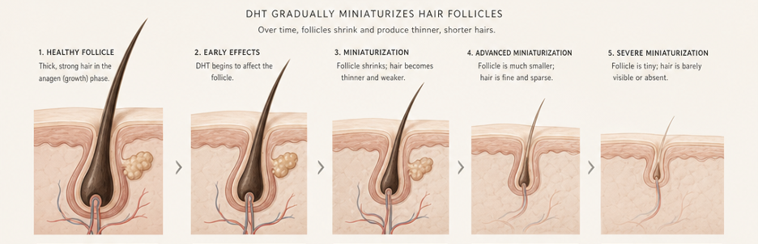

Over the past year, a pattern has started to surface in quieter conversations. Not in clinics or product pages, but inside comments and group chats among women trying to deal with hair loss. A few people around me have tried finasteride, and while some mention that their hair seems to be improving, the conversation rarely ends there. There are often other comments that feel harder to define. Feeling slightly off. Lower mood. Not quite like themselves. Not dramatic enough to clearly label, but noticeable enough to bring up.
These are not universal experiences, and not everyone reports them. But they come up often enough to raise a different kind of question. Not just whether finasteride works, but what it actually feels like to be on it over time. Hair loss creates a sense of urgency that makes even imperfect solutions feel worth trying, but what is often left out of the public conversation is that finasteride is not just acting on hair. It is acting on hormone pathways, and that distinction is rarely explored in a way that feels real to the people taking it.
What Finasteride Actually Is
Finasteride is often talked about like a hair loss solution, but that is not what it was originally made for. It works by lowering DHT, a strong hormone signal made from testosterone.
So what was it made for?
Finasteride was first used to treat benign prostatic hyperplasia, which is when the prostate gets bigger with age and causes issues like needing to pee more often. Only later did people realize it could also help with hair loss, and it started being used for that in a lower dose.[1]
What is 5-alpha reductase?
Your body makes this enzyme on its own. Think of it like a little converter that takes some of your testosterone and turns it into DHT. Finasteride steps in and blocks that converter, so the body makes less DHT.
How does DHT thin hair?
As the follicle gets smaller, the hair growth phase gets shorter, and each new strand grows finer, weaker, and easier to lose. With less DHT pressure, that shrinking may slow, which is why finasteride can make sense for some cases of pattern hair loss.[2]
Flip the switch below to see what finasteride actually changes inside the follicle.
Off: the enzyme 5-alpha reductase converts testosterone into DHT. In people who are genetically sensitive to DHT, that signal slowly shrinks hair follicles. This is androgenetic alopecia, also known as pattern hair loss.
On: finasteride binds to 5-alpha reductase and blocks the converter, so the body makes less DHT. With less DHT pressure, follicle shrinking may slow down.

DHT binds to receptors on the dermal papilla and gradually miniaturizes the follicle. Each cycle the growth (anagen) phase gets shorter and the resting phase longer, so strands regrow finer, weaker, and shorter until some follicles stop producing visible hair altogether.
The catch is obvious once you stop treating the scalp like it lives in a separate zip code. Finasteride changes how the body handles hormones. It does not just politely tap the follicle and leave everything else alone.
The Tradeoff Few People Talk About
Finasteride works on hormones, so its side effects do too. Tap each one to see what is on the label, and what the casual tone tends to leave out.
Side effects in men
Finasteride does come with known side effects. In men, these can include a decrease in sex drive and sexual function.
The mood conversation (EMA, 2025)
The mood conversation has become harder to ignore: in 2025, the European Medicines Agency indicated suicidal ideation as a side effect of finasteride 1 mg and 5 mg tablets, advising patients to stop treatment and seek medical advice if they experience depression.[3] That does not mean everyone who takes finasteride will experience these effects, but the casual tone around it is problematic.
Why it's more complicated for women
For women, the situation is more complicated. Finasteride is not FDA approved for women who have not gone through menopause, and it is not recommended during pregnancy because it can affect the development of a male baby.[4] This is why its use in women is more limited and approached more carefully.
Why people still try it off-label
Even so, some women still choose to try it off-label. Hair is identity, control, beauty currency, styling freedom, and confidence. Hair loss can feel urgent. The panic is immediate while the options are limited. But desperation does not turn a male-indicated hormone drug into a simple, safe solution.
Options that take follicle biology seriously without making hormone disruption the price of entry. A serious hair-growth product should do more than lower one signal. It should ask what the follicle needs to stay active, productive, and resilient over time.
NOVOGRO™ Enters From a Different Angle
A dermatologist I know through the industry once mentioned something off-camera that stayed with me: NOVOGRO™. Now that the research paper is out, I can finally talk about it out loud.
NOVOGRO™ is a proprietary class of precision molecules designed around follicle biology. The science traces back to a recent preprint,[5] and to RE:YOU, an emerging brand building its serum around the technology.
It works across multiple pathways: NV-623 and NV-624 support the dermal papilla cells that act as the follicle's control center, and NV-273 supports the scalp environment around it. We walked through those two pathways and the data behind them in After Minoxidil, Everyone Wants a Better Answer. Is NOVOGRO™ the One?
NV-1065 is positioned around a more targeted, non-steroidal strategy for the same DHT-production pathway involved in finasteride and dutasteride, meaning DHT-related follicle stress can be addressed without leaning on the older framework that makes finasteride and dutasteride more complicated for many users.
The benchmark below puts NV-1065 head to head with dutasteride, the stronger and broader DHT-targeting cousin of finasteride, across a range of concentrations.
NV-1065 tracks closely with dutasteride across the range: it pulls level around 150 µM and edges past dutasteride at the top of the range. Block 5-alpha reductase that hard and you choke off the DHT that drives pattern thinning.
But the more interesting part is what it does not do.
The research group tested testosterone, DHT, dutasteride, and NV-1065 in a steroid-sensitive cell model. Think of it as a lab test designed to flag steroid-like behavior. Testosterone, DHT, and dutasteride increased cell growth under those conditions. NV-1065 did not.
Lower is better. This test measures hormone-driven growth in steroid-sensitive cells. Testosterone is itself a steroid hormone, so it shows what a strong steroid response looks like (35.2%), and dutasteride pushed that growth too (18.0%). NV-1065 barely moved the needle (3.6%).
The takeaway: NV-1065 is non-steroidal and non-hormonal. It does not drive the hormone-dependent cell growth that a steroid like testosterone, or a drug like dutasteride, can.
A More Modern Question
Women do not need another male-origin hormone-pathway drug with softer branding. They need targeted science that respects DHT as one pressure point without systematic hormonal trade-off. Men deserve that too.
Finasteride taught the industry that DHT matters. NV-1065 asks a more modern question: can we address DHT-related follicle stress without relying on the same steroid-adjacent drug logic?
Human data is still needed, and I am watching closely.
References
- LiverTox: Clinical and Research Information on Drug-Induced Liver Injury. Finasteride. Bethesda: National Institute of Diabetes and Digestive and Kidney Diseases; 2020. Available from: ncbi.nlm.nih.gov/books/NBK548319
- Kaufman KD. Molecular mechanisms of androgenetic alopecia. Front Biosci. 2002;7:d1603–12. PMID: 12213548
- European Medicines Agency. Measures to minimise risk of suicidal thoughts with finasteride and dutasteride medicines. August 2025. Available from: ema.europa.eu
- DailyMed. Finasteride tablet, film coated — prescribing information. U.S. National Library of Medicine. Available from: dailymed.nlm.nih.gov
- Qu Z, Li Y, Cho SE, Doğan L, Yao Q, Tang L, Zhao G, Li A, Omori S, Wong F, Zhao EM, Zhang DKY. AI-enabled discovery of small molecules targeting complementary pathways for hair follicle rejuvenation. bioRxiv preprint. 2026. doi: 10.64898/2026.06.09.728282